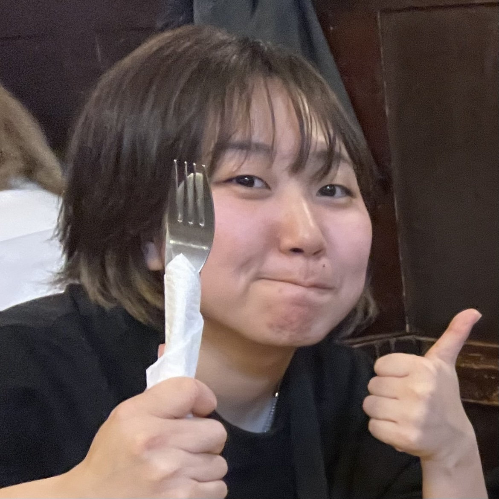

Yuna Haseyama
長谷山優菜

Education and Research
- Graduated from the Department of Electronics and Information Engineering, Faculty of Engineering, Hokkai-Gakuen University.
- Completed the master's program at the Graduate School of Information Science and Technology, Hokkaido University.
- Currently a first-year doctoral student at the Graduate School of Information Science and Technology, Hokkaido University (Intelligent Software Laboratory).
Interests and Values
- Traveling and spending time with friends.
- Never forget your beginner's mindset.
- When I become absorbed in my daily work, it is easy to lose sight of what matters to me, what I originally wanted to do, and how many different people and perspectives there are in the world. When I feel uncertain, I try to pause and reflect.
Publications and Presentations
2026
- カテゴリに基づくFew-shot事例選択による医療事故の「背景・要因」及び「改善策」の生成 (Generating Background and Causal Factors and Preventive Measures for Medical Incidents Using Category-based Few-shot Example Selection).
Yuna Haseyama, Tomoki Ito, Hiroki Sakaji, Itsuki Noda. Transactions of the Japanese Society for Artificial Intelligence, Vol. 41, No. 4, pp. AN40-E_1–12. - 医療事故報告書の事故事象・背景要因・改善策と抽象化項目を結び付けたデータセットの構築 (Constructing a Dataset Linking Medical Incident Events, Background Factors, and Preventive Measures to Abstracted Items).
Yuna Haseyama, Tomoki Ito, Hiroki Sakaji, Itsuki Noda. 21st Symposium on Young Researchers in Natural Language Processing (YANS 2026). - Medical Incident Causal Factors and Preventive Measures Generation Using Tag-based Example Selection in Few-shot Learning
Yuna Haseyama, Tomoki Ito, Hiroki Sakaji, Itsuki Noda. arXiv preprint. - RCA2に基づく医療事故インシデントの改善策強度分類の検証 (Evaluating the Classification of Preventive Measure Strength for Medical Incidents Based on RCA2).
Yuna Haseyama, Tomoki Ito, Hiroki Sakaji, Itsuki Noda. 88th National Convention of the Information Processing Society of Japan.
2025
- 医療事故の背景・要因、改善策生成におけるfew-shotの事例選択による性能比較検証 (Comparing Few-shot Example Selection Methods for Generating Background and Causal Factors and Preventive Measures for Medical Incidents).
Yuna Haseyama, Tomoki Ito, Hiroki Sakaji, Itsuki Noda. 39th Annual Conference of the Japanese Society for Artificial Intelligence. - 医療事故・ヒヤリハットに関する要因・対策案生成ベンチマークの提案 (A Benchmark for Generating Causes and Countermeasures for Medical Incidents and Near Misses).
Yuna Haseyama, Tomoki Ito, Hiroki Sakaji, Itsuki Noda. 31st Annual Meeting of the Association for Natural Language Processing (NLP 2025). - Attempt to Constructing Narrative Indices from Analyst Reports
Hiroki Sakaji, Yuna Haseyama, Kenji Hiramatsu, Itsuki Noda. JSAI Technical Report, Type 2 SIG, 2025 CSS-001, pp. 06–09.
Appointments and Committees
- Part-time lecturer, Hokkai-Gakuen University (teaching Computer Science since April 2026).
- Student editorial committee member, Japanese Society for Artificial Intelligence.
- Committee member, 21st Symposium on Young Researchers in Natural Language Processing (YANS 2026).
Fellowship
- Hokkaido University Next Generation AI Doctoral Fellowship (BOOST).
Awards
2026
- Money Forward Award, 21st Symposium on Young Researchers in Natural Language Processing (YANS 2026).
- Best Paper Award, “Research Papers Pioneering the Future of AI,” Japanese Society for Artificial Intelligence 40th Anniversary Paper Award.
2025
- Student Encouragement Award, Annual Conference of the Japanese Society for Artificial Intelligence.